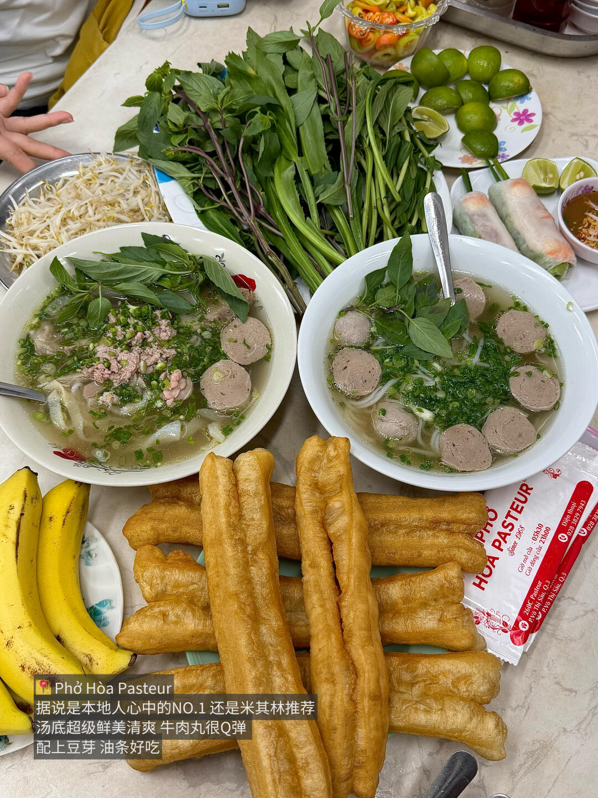

餐廳 / 咖啡店詳情
河粉｜Phở Hòa Pasteur
未排入固定行程 · 行程中的餐飲
簡介
Phở Hòa Pasteur 已列入 SAIGON STAYS 美食卡片；口味、座位與供應狀況以現場為準。
地址
260C Pasteur
營業時間
待確認，出發前請查看官方或 Google Maps 最新資訊
價格
待確認，最終以現場 / 官方資訊為準
本頁只保留目前行程卡片已有的資訊；未核實的時間、票價、分店與活動內容不作推測。目前沒有可靠且可長期引用的店家圖片來源，因此先不放圖片。
📸 小紅書實拍（共 1 張）
